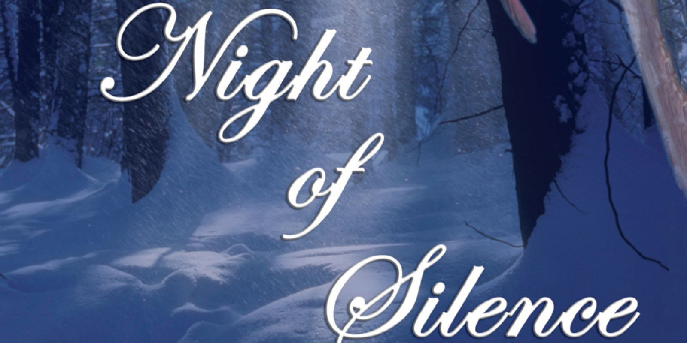
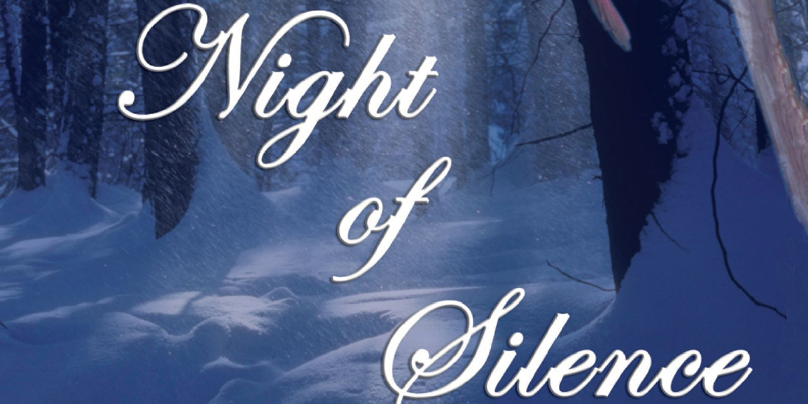

Fond du Lac High School Puts on Night of Silence Concert
Fond du Lac High School students performed three sold out concerts at the FHS PAC on the 8th through the 10th
of December this year to support a city-wide tradition. The Night of Silence Concert is performed for one weekend in December each
year to recognize the holiday season. It is a combined concert between the Fond du Lac High School Concert Choirs, Symphonic
Orchestra, SWaP band and the Cardinal Singers.


The concert has become an important tradition in many families lives. There were many people hoping to
get into the concert, but weren't able to for that reason. The school livestreamed the event on the
School District Website. You can watch the livestream archive either in the window
to your right. The livestream can continue to provide the holiday experience for those who were not able to attend and would
have liked to view the performance.
The stage at the high school was decorated with more than three hundred twenty poinsettias, all of which the students sold. This year was the highest selling year, with a new record of poinsettias sold by one student. Dawson Wyrobeck sold a high thirty-five poinsettias which trumped the previous twenty-nine.
The stage at the high school was decorated with more than three hundred twenty poinsettias, all of which the students sold. This year was the highest selling year, with a new record of poinsettias sold by one student. Dawson Wyrobeck sold a high thirty-five poinsettias which trumped the previous twenty-nine.
The holiday tradition was brought together through the efforts of all of the music program. Throughout the holiday program,
the music brought people to a common interest and allowed for a fifteen year long tradition to be kept alive.